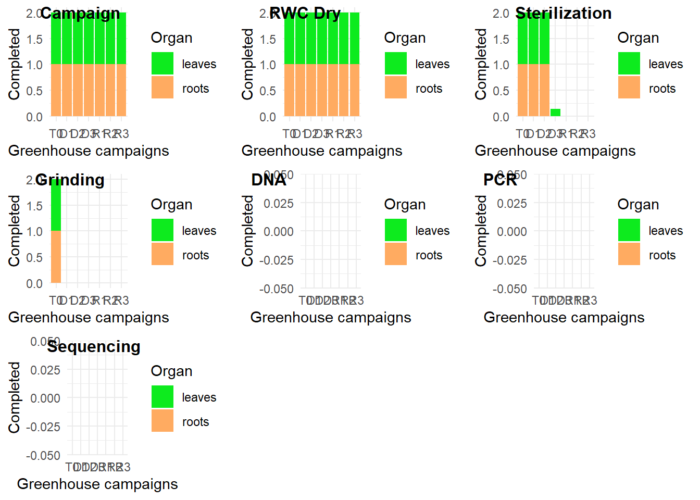

Introduction to the greenhouse experiment
While most research has had a focus on aboveground dynamics, an important unanswered question in the understanding of plant strategies is the extent to which the microbial community contributes to tropical forest functioning. In roots, the beneficial effects of the microbiome, mycorrhizal fungi or Nitrogen-fixing bacteria, are known to promote nutrient and water uptake, stimulate germination, growth and plant fitness under abiotic stress. The challenge is now to analyze how tree-microbiome interactions will affect the resistance (ability to resist and maintain fitness) and the resilience (ability to recover) of plants in a changing environment. Indeed, more frequent and intense drought events are being forecasted over the Amazon Basin. Previous work was mainly focused on terra firme forests, but few studies address the ecophysiological characteristics of seasonally flooded forests. To tackle this knowledge gap, we suggest a two-fold multidisciplinary approach which combines field sampling with a greenhouse experiment. Seedlings will be sampled in seasonally flooded forests located at Paracou in French Guiana. As mechanistic traits are closely linked to species physiological responses to abiotic environments, we will put into correlation the variation of seedlings’ mechanistic traits values with the microbiome. This project is carried out within the framework of the PhD thesis of M. Boisseaux on the relationships between species’ mechanistic traits and their distribution across contrasted habitats in the tropical forests of French Guiana in a context of climate change. It will provide significant insight into the strategies of tropical species to cope with drought and improve our predictions of ecosystem functioning under future climatic regimes.
3.6 ToDo
- calibrate PSYPRO cables that are missing
- winrhizo
- leaf area : Jean-Yves Goret
- analyze
- write

3.5 Comments